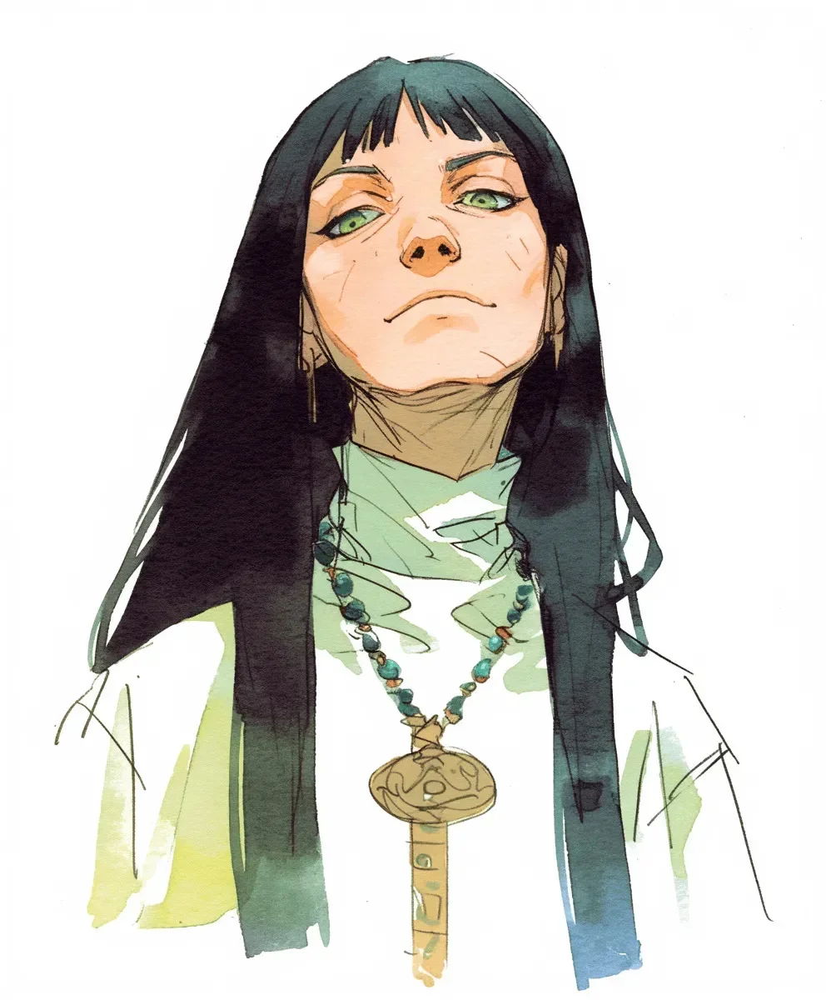

황금 열쇠가 그녀의 가슴뼈에 닿아 뜨겁게 달아올랐고, 침입자의 발자국 소리가 성소의 대리석 홀을 울렸다. 발걸음 하나하나가 그녀의 비취 구슬 목걸이에 파문을 일으켰고, 마치 고요한 연못에 떨어지는 빗방울 같았다. 그녀는 미동도 없이 정좌 자세로 앉아 있었고, 바다빛 초록 장식이 달린 하얀 의식용 도복은 마치 얼어붙은 파도처럼 그녀 주위로 흘러내렸다. 주된 발자국 소리 뒤로 희미한 발소리들이 다른 이들의 존재를 드러냈다. 기다리며. 지켜보며.
[The golden key burned against her sternum as the intruder’s footsteps echoed through the sanctum’s marble halls. Each step sent ripples through the jade beads of her necklace, like raindrops disturbing a still pond. She remained motionless, seated in seiza position, her white ceremonial robes with their sea-green accents pooling around her like frozen waves. Behind the primary footsteps, fainter ones betrayed the presence of others. Waiting. Watching.]
선두 침입자가 멈췄다. 그녀의 뒤로 10미터 떨어진 곳에서 비싼 가죽 구두가 천년 된 돌바닥을 스쳤다. 공기는 향과 긴장감으로 무거워졌다.
[The lead intruder stopped. Ten meters behind her, expensive leather shoes scuffed against thousand-year-old stone. The air grew thick with incense and anticipation.]
“영원한 문의 딸들은 찾을 수 없다고 들었는데.” 그의 목소리에는 미국인 특유의 야망이 날카롭게 묻어났다. “여기까지 오는데 8백만이나 들었어.”
[“The Daughters of the Eternal Gate are supposed to be impossible to find.” His voice carried the sharp edge of American ambition. “Cost me eight million to get this far.”]
그녀는 돌아보지 않았다. 열쇠의 열기가 더욱 강렬해졌고, 그 화려한 문양이 마치 두 번째 심장처럼 그녀의 피부에 맥동했다. “돈이 많은 문을 열어주죠,” 그녀가 말했다. 경멸이 뚝뚝 떨어지는 목소리였다. “하지만 이 문은 아니에요.”
[She didn’t turn. The key’s heat intensified, its ornate engravings pulsing against her skin like a second heartbeat. “Money opens many doors,” she said, each word dripping with disdain. “But not this one.”]
“모든 것에는 가격이 있지.” 서류가방이 딸깍 열리는 소리가 첫 십자군 전쟁 이전에 새겨진 벽을 모독하듯 울렸다. “값을 말해보시죠. 그 문 뒤에 있는 유물들은—”
[“Everything has a price.” A briefcase clicked open, the sound profane against walls carved before the first crusade. “Name it. The artifacts behind that door—”]
“가격을 말씀하시나요?” 이제 그녀가 일어섰다. 그 움직임은 의도적이고 차가웠으며, 귀족적인 경멸감으로 턱을 치켜들었다. 비취 구슬이 황금 열쇠에 부딪혀 짤랑거렸고, 그녀가 돌아서자 초록빛 눈동자가 등불 아래서 깎아낸 에메랄드처럼 날카로웠다. “시간을 세기로 헤아리는 자에게?”
[“You speak of prices?” Now she rose, her movements deliberate and cold, her chin tilted in aristocratic contempt. The jade beads clinked against the golden key as she turned, her green eyes sharp as cut emeralds in the lantern light. “To one who counts time in centuries?”]
그는 맞춤 양복을 입고 거기 서 있었다. 부가 곧 힘이라고 생각하는 또 다른 남자였다. 하지만 진정한 힘은 그의 나라가 건국되기도 전부터 존재해온 고대의 열쇠가 지닌 무게에 있었다. 피와 뼈를 통해 전해져 내려온 책임감 속에 있었다.
[He stood there in his bespoke suit, another man who thought wealth equaled power. But true power lay in the weight of an ancient key that had existed before his country’s founding. In the responsibility passed through blood and bone.]
열쇠가 한 번 세게 맥동했고, 자국이 남을 정도였다. 그의 일행들이 그림자 속에서 몸을 움직였고, 그녀의 매서운 시선 아래 안절부절못하기 시작했다.
[The key pulsed once, hard enough to leave a mark. His companions shifted in the shadows, growing restless under her withering gaze.]
그녀가 미소를 지었지만, 그 미소는 눈까지 닿지 않았다. “당신의 수백만 달러를 우리의 벽을 부수는 데 쓰지 말고 우리의 역사를 배우는 데 썼어야 했어요.” 그녀의 손이 열쇠의 정교한 손잡이를 감쌌다. “초대받지 않고 들어온 자의 대가는 변한 적이 없거든요.”
[She smiled, though it never reached her eyes. “You should have spent your millions on learning our history instead of breaking our walls.” Her hand closed around the key’s elaborate handle. “The price for entering uninvited has never changed.”]
비취 구슬이 빛나기 시작했다.
[The jade beads began to glow.]
그녀가 손바닥을 바깥으로 향해 들어올리자 공기가 고대의 힘으로 파직거렸다. 비취 구슬들이 청록빛으로 폭발하듯 빛났고, 이상한 그림자들이 복수의 영혼처럼 대리석 벽을 춤추며 넘실거렸다. 그림자 속의 남자들이 무기를 꺼냈지만, 그들의 현대식 강철은 눈 앞에서 녹슬어 오래된 먼지처럼 손가락 사이로 부스러져 내렸다. 그들의 리더가 들고 있던 서류가방이 터져 열렸고, 가치 없는 지폐들이 그의 부를 조롱하듯 위로 휘날렸으며, 각각의 지폐는 순식간에 수백 년을 늙어갔다.
[The air crackled with ancient power as she raised her hand, palm outward. The jade beads erupted in viridian light, casting strange shadows that danced across the marble walls like vengeful spirits. The men in the shadows drew their weapons, but their modern steel turned to rust before their eyes, crumbling through their fingers like ancient dust. Their leader’s briefcase burst open, sending worthless paper bills spiraling upward in a mockery of his wealth, each note aging centuries in seconds.]
“지식의 진정한 대가는,” 그녀가 말했다. 그녀의 목소리에는 시대를 초월한 지혜가 울렸다. “시간 속에서 자신의 자리를 아는 것이에요.” 황금 열쇠가 그녀의 가슴에서 갓 태어난 태양처럼 타올랐고, 침입자들은 순식간에 수십 년을 늙어갔다 – 머리카락이 하얗게 변하고, 피부에 주름이 생기고, 눈동자는 세월의 무게로 흐려졌다. 그녀는 그들을 그대로 두었다. 늙었지만 살아있는 채로, 그들이 사려 했던 시간의 무게로 몸이 구부러진 채로. 그들은 이 교훈을 뼈 속 깊이 새기게 될 것이다. 감히 돈으로 살 수 있다고 생각했던 세월의 흔적이 몸에 새겨진 채로. 그들이 비틀거리며 물러나는 동안, 그녀는 다시 정좌 자세를 취했고, 비취 구슬은 그녀의 피부에 닿아 식어갔다. 성소는 다시 고요해졌지만, 이제 그곳에는 그녀가 지키는 문만큼이나 오래된 진리의 메아리가 맴돌고 있었다.
[“The true price of knowledge,” she said, her voice resonating with the wisdom of ages, “is understanding your place in time.” The golden key blazed like a newborn sun against her chest as the intruders aged decades in moments – hair whitening, skin wrinkling, eyes clouding with the weight of years. She left them there, aged but alive, their bodies bent with the burden of time they had tried to purchase. They would carry this lesson in their bones, marked by the years they had dared to think they could buy. As they stumbled away, she resumed her seiza position, the jade beads cooling against her skin. The sanctum returned to silence, but now it held the echo of a truth as old as the door she guarded.]